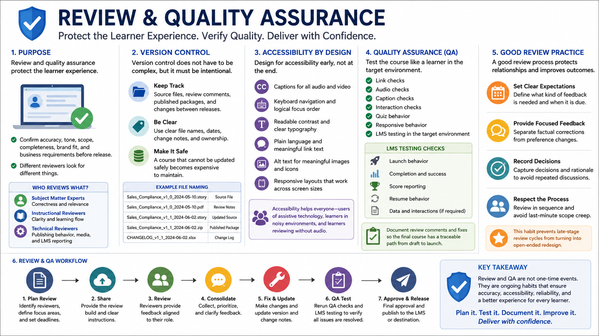

Review, Accessibility, and Quality Assurance
Connecting to LMS... Progress: in progress

Narration
Review and quality assurance protect the learner experience. Stakeholder review helps confirm accuracy, tone, scope, completeness, brand fit, and business requirements before release. Subject matter experts should focus on correctness and relevance. Instructional reviewers should look for clarity and flow. Technical reviewers should check publishing behavior, media, and LMS reporting.
Version control does not have to be complex, but it must be intentional. Keep track of source files, review comments, published packages, and changes between releases. A course that cannot be updated safely becomes expensive to maintain. Clear file names, dates, change notes, and ownership help teams avoid confusion when a course needs revision six months later.
Accessibility should be designed into the course, not patched in at the end. Consider captions, keyboard navigation, focus order, alt text, readable contrast, plain language, meaningful link text, and layouts that work across screen sizes. Accessibility improves the experience for many learners, including people using assistive technology, learners in noisy environments, and learners reviewing material without audio.
QA should include link checks, audio checks, caption checks, interaction checks, quiz behavior, responsive behavior, and LMS testing in the target environment. Publishing settings may behave differently across LMS platforms, so completion, score reporting, resume behavior, and launch behavior should be verified before release. Document review comments and fixes so the final course has a traceable path from draft to launch.
A good review process also protects relationships. When reviewers know what kind of feedback is needed and when it is due, comments become easier to resolve. Separate factual corrections from preference changes, and record decisions. That habit prevents late-stage review cycles from turning into open-ended redesign.